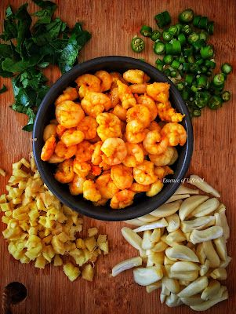

Our Traditional Pickles
Each variety is carefully prepared using age-old techniques and the freshest ingredients from local fishermen.

$12.95
Spicy Mackerel Pickle
A bold, fiery pickle made with fresh mackerel, red chilies, and our secret blend of 12 spices. Perfect with rice or bread.
$10.95
Tangy Sardine Pickle
Fresh sardines preserved in a tangy tamarind base with curry leaves and mustard. A coastal favorite for generations.

$14.95
Ginger Prawn Pickle
Succulent prawns in a ginger-garlic infused oil with a hint of caramelized onions. A delicacy from coastal kitchens.